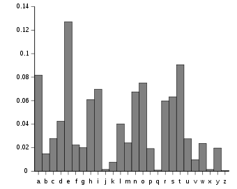
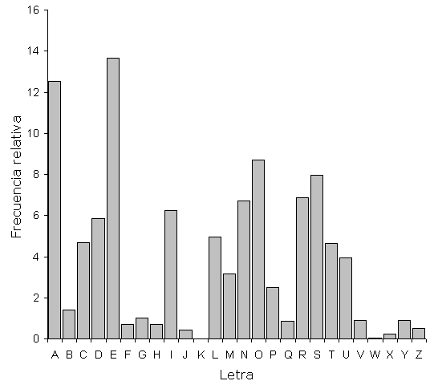
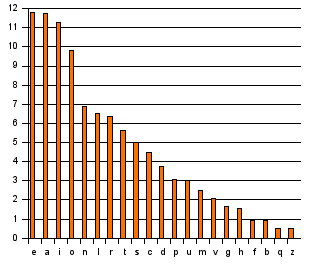

Cryptanalysis
Introduction · History · Examples · Researchers
Introduction
This field is the rival of Cryptography. It focuses on analysing and ultimately breaking a type of code known as ciphers to have access to secret information. This requires a lot of logic and super-difficult mathematical formulae. This is why this topic is one of the most challenging ones, but also on of the most historic ones in Information Security.
History
The field of Cryptanalysis has always advanced at the same time as Cryptography. They always go together, despite being absolute opponents, this is why they are viewed as two sides of the same coin. Every time a new cipher is developed, a new cryptanalytic technique evolves to crack it. Sometimes, this takes a long time, and we can see this throughout history.
So that you get an idea of how back this goes, let’s talk about Mary, Queen of Scots in 1587. She was tried and executed for treason due to her involvement in three plots to murder Elizabeth I of England. Mary would write letters which discussed plans to assassinate Elizabeth, but these were all coded so that nobody except her and her team would understand. These plans were revealed after her coded correspondence with other conspirators was deciphered.
Now that you understand of how old the art of cryptanalysis is. Let’s look at a more recent event: World War II. In this war, the Allies benefitted tremendously from their cryptanalysis success. The most famous examples include the German Enigma Machine and the Lorenz cipher. It is estimated that thanks to this success, the war was shortened by up to two years, saving millions of lives.
Alan Turing - SciShow Youtube Channel
Bletchley Park - CNBC Youtube Channel
Ever since then, governments throughout the globe have started recognising how important cryptanalysis is, hence they invest in this field. For instance, GCHQ (the British intelligence team in charge of the country digital protection) and the NSA (same as GCHQ but in the US), which are still pretty active today, play a very important role making sure that citizens are safe, and that information is not accessed without permission.
Examples
- Frequency Analysis: This is one of the most classical tools used to break simple ciphers. In most languages, some letters and combination of letters appear more often than others. In English, the letter “E” is the most common letter. Similarly, the digraph “TH” is the most likely pair of letters. These little facts of course vary with language. And in some cases, they are not applicable.
English Frequency Analysis
Spanish Frequency Analysis
Italian Frequency Analysis
- Polyalphabetic Cypher: For centuries, this cypher was considered to be completely secure: “le chiffre indéchiffrable - the indecipherable cipher” they called it. The French diplomat that came up with it, Blaise de Vigenère, thought it would be impossible to break. But he was wrong. Charles Babbage and Friedrich Kasiski succeded in breaking it, however it took them centuries!

The Vigenère Table
- The Bombe: This one was the machine that Alan Turing, the father of Computer Science, and his team developed in order to break the Enigma, mentioned before. It was an electro-mechanical device used to decipher secret messages coming from Germany during World War II.
A replica of the Bombe - The Imitation Game